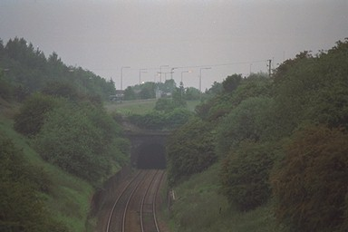

 The railway tunnel passes under the Greyhound Island on Telford's Holyhead Road. The canal also had a tunnel under here somewhere, and every other north-south route through Telford came under, over or through.